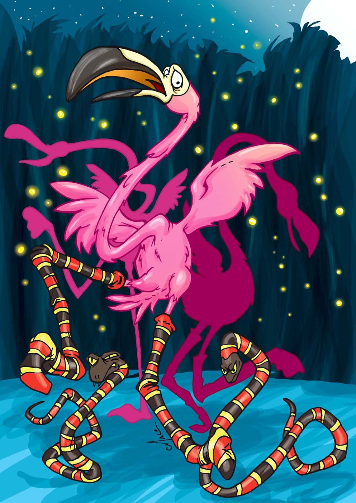

|  |
Las medias de los flamencos(Cuentos de la selva 1998)Cierta vez las víboras dieron un gran baile. Invitaron a las ranas y a los sapos, a los flamencos, y a los yacarés y a los pescados.
Los pescados, como no caminan, no pudieron bailar; pero siendo el baile a la orilla del río los pescados estaban asomados a la arena, y aplaudían con la cola.
Los yacarés, para adornarse bien, se habían puesto en el pescuezo un collar de bananas, y fumaban cigarros paraguayos.
Los sapos se habían pegado escamas de pescado en todo el cuerpo, y caminaban meneándose, como si nadaran. Y cada vez que pasaban muy serios por la orilla del río, los pescados les gritaban haciéndoles burla.
Las ranas se habían perfumado todo el cuerpo, y caminaban en dos pies. Además, cada una llevaba colgada, como un farolito,
una luciérnaga que se balanceaba.
Pero las que estaban hermosísimas eran las víboras. Todas, sin excepción, estaban vestidas con traje de bailarina,
del mismo color de cada víbora. Las víboras coloradas llevaban una pollerita de tul colorado; las verdes, una de tul verde;
las amarillas, otra de tul amarillo; y las yararás, una pollerita de tul gris pintada con rayas de polvo de ladrillo y ceniza,
porque así es el color de las yararás.
Y las más espléndidas de todas eran las víboras de coral, que estabanvestidas con larguísimas gasas rojas, blancas y negras,
y bailabancomo serpentinas. Cuando las víboras danzaban y daban vueltasapoyadas en la punta de la cola, todos los invitados aplaudíancomo locos.
Solo los flamencos, que entonces tenían las patas blancas, y tienenahora como antes la nariz muy gruesa y torcida,
solo los flamencosestaban tristes, porque como tienen muy poca inteligencia nohabían sabido cómo adornarse. Envidiaban el traje de todos,
ysobre todo el de las víboras de coral. Cada vez que una víborapasaba por delante de ellos,
coqueteando y haciendo ondular lasgasas de serpentinas, los flamencos se morían de envidia. Un flamenco dijo entonces:
-Yo sé lo que vamos a hacer. Vamos a ponernos medias coloradas,blancas y negras, y las víboras de coral se van a enamorar denosotros.
Y levantando todos juntos el vuelo, cruzaron el río y fueron agolpear en un almacén del pueblo.
-¡Tan-tan! -pegaron con las patas.
-¿Quién es? -respondió el almacenero.
-Somos los flamencos. ¿Tienes medias coloradas, blancas y negras?
-No, no hay -contestó el almacenero-. ¿Están locos? En ningunaparte van a encontrar medias así.
Los flamencos fueron entonces a otro almacén.
-¡Tan-tan! ¿Tienes medias coloradas, blancas y negras?
El almacenero contestó:
-¿Cómo dice? ¿Coloradas, blancas y negras? No hay medias así enninguna parte. Ustedes están locos. ¿Quiénes son?
-Somos los flamencos -respondieron ellos.
Y el hombre dijo:
-Entonces son con seguridad flamencos locos.
Fueron a otro almacén.
-¡Tan-tan! ¿Tienes medias coloradas, blancas y negras?
El almacenero gritó:
-¿De qué color? ¿Coloradas, blancas y negras? Solamente a pájaros narigudos como ustedes se les ocurre pedir medias así. ¡Váyanse enseguida!
Y el hombre los echó con la escoba.
Los flamencos recorrieron así todos los almacenes, y de todas partes los echaban por locos.
Entonces un tatú, que había ido a tomar agua al río, se quiso burlar de los flamencos y les dijo, haciéndoles un gran saludo:
-¡Buenas noches, señores flamencos! Yo sé lo que ustedes buscan. No van a encontrar medias así en ningún almacén.
Tal vez haya en Buenos Aires, pero tendrán que pedirlas por encomienda postal. Mi cuñada, la lechuza, tiene medias así.
Pídanselas, y ella les va a dar las medias coloradas, blancas y negras.
Los flamencos le dieron las gracias, y se fueron volando a la cueva de la lechuza. Y le dijeron:
-¡Buenas noches, lechuza! Venimos a pedirte las medias coloradas, blancas y negras. Hoy es el gran baile de las víboras, y
si nos ponemos esas medias, las víboras de coral se van a enamorar de nosotros.
-¡Con mucho gusto! -respondió la lechuza-. Esperen un segundo, y vuelvo enseguida.
Y echando a volar, dejó solos a los flamencos; y al rato volvió con las medias. Pero no eran medias, sino cueros de víboras de coral,
lindísimos cueros recién sacados a las víboras que la lechuza había cazado.
-Aquí están las medias -les dijo la lechuza-. No se preocupen de nada, sino de una sola cosa: bailen toda la noche, bailen sin parar un momento,
bailen de costado, de pico, de cabeza, como ustedes quieran; pero no paren un momento, porque en vez de bailar van entonces a llorar. Pero los flamencos, como son tan tontos, no comprendían bien qué gran peligro había para ellos en eso,
y locos de alegría se pusieron los cueros de las víboras de coral, como medias, metiendo las patas dentro de los cueros, que eran como tubos. Y muy contentos se fueron volando al baile.
Cuando vieron a los flamencos con sus hermosísimas medias, todos les tuvieron envidia. Las víboras querían bailar con ellos, únicamente,
y como los flamencos no dejaban un instante de mover las patas, las víboras no podían ver bien de qué estaban hechas aquellas preciosas medias.
Pero poco a poco, sin embargo, las víboras comenzaron a desconfiar.
Cuando los flamencos pasaban bailando al lado de ellas se agachaban hasta el suelo para ver bien.
Las víboras de coral, sobre todo, estaban muy inquietas. No apartaban la vista de las medias,
y se agachaban también tratando de tocar con la lengua las patas de los flamencos, porque la lengua de las víboras es como la mano de las personas.
Pero los flamencos bailaban y bailaban sin cesar, aunque estaban cansadísimos y ya no podían más.
Las víboras de coral, que conocieron esto, pidieron enseguida a las ranas sus farolitos,
que eran bichitos de luz, y esperaron todas juntas a que los flamencos se cayeran de cansados. |